JStruct interfaccia utente
Le toolbar sono liberamente posizionabili ai bordi della finestra oppure separate da essa.
Tipicamente i tasti delle toolbar duplicano le funzionalità del menu standard.
Cliccando un particolare nella
figura si raggiunge l'help corrispondente:
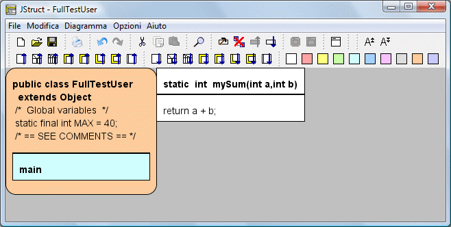
Le seguenti funzioni sono presenti solo nel Toolbar e non nel menu:
-
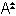
-
Zoom +: Ingrandisce il carattere e quindi l'immagine.
-
-
Zoom -: Rimpiccolisce il carattere e quindi l'immagine.
-
-
Palette di 10 colori: Colora l'elemento selezionato
Menu standard
-
File
-
Modifica
-
Diagramma
-
Nuovo METODO: Crea un nuovo Metodo. Utilizzabile solo se si é selezionata una Classe
-
Nuova CLASSE: Crea una nuova Classe. Utilizzabile solo se non si é selezionato alcun blocco oppure se si é selezionata una Classe
-
Aggiungi
-
Prima: Inserisce un blocco prima dell'elemento selezionato, usando le seguente lista:
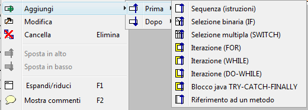
-
Dopo: Inserisce un blocco dopo l'elemento selezionato, usando la seguente lista:
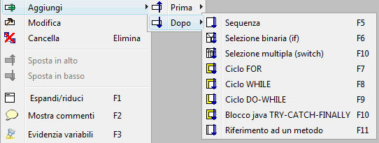
-
Modifica: Apre
un pop-up per l'editing del codice e dei commenti per l'elemento
selezionato. La stessa operazione puó essere effettuata con il mouse,
con un doppio click su un blocco od una Classe od un Metodo espansi;
inoltre un doppio click sullo sfondo permette di editare i dati del
programma (package, import e commento iniziale non javadoc):
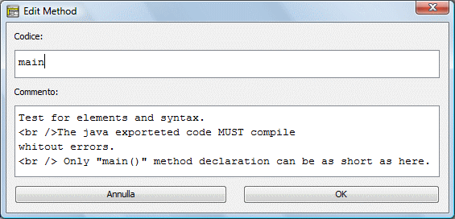
-
Cancella: Elimina il blocco selezionato. La stessa operazione puó essere effettuata con il tasto cancella: [canc]
-
Sposta in alto: Sposta l'elemento selezionato verso l'alto di una posizione.
-
Sposta in basso: Sposta l'elemento selezionato verso il basso di una posizione.
-
Espandi/riduci: Espande
e riduce Classi e Metodi selezionati, per nascondere le parti non di
interesse. Anche un doppio click del mouse espande una classe od un
metodo ridotto.
|
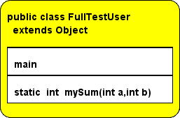
|
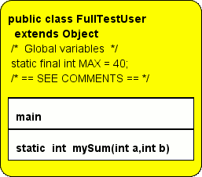
|
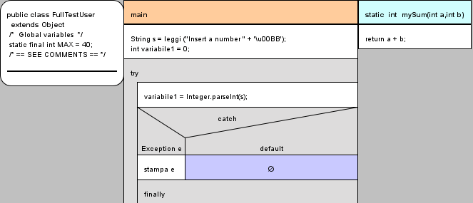
|
Classe ridotta
Metodi ridotti
|
Classe espansa
Metodi ridotti
|
Classe espansa
Metodi espansi
|
-
Mostra commenti: Abilita
la visualizzazione automatica dei commenti al passaggio del mouse su un
blocco. I blocchi con commenti sono evidenziati con un bordo grigio a
sinistra.
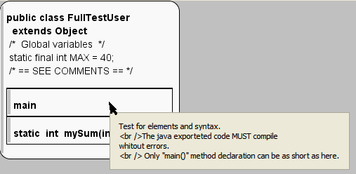
-
Evidenzia variabili: Abilita l'evidenziazione sintattica del codice:
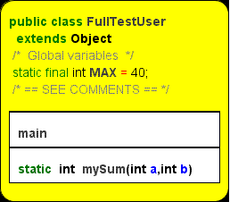
-
Analyze Structogram: Abilita la verifica dei piú frequenti errori java nel codice.
-
Opzioni
-
Caratteri: Permette di scegliere con un pop-up i caratteri usati (si consigliano i font monospace):
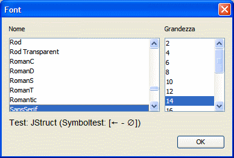
I simboli presenti nel test sono usati da JSruct.
-
Colori: Permette di scegliere la palette di 10 colori del Toolbar da usare per evidenziare i blocchi. Cliccare su un colore nel pop-up:
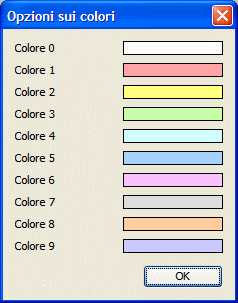
-
Strutture: Permette con un pop-up di modificare i contenuti di default dei nuovi elementi:
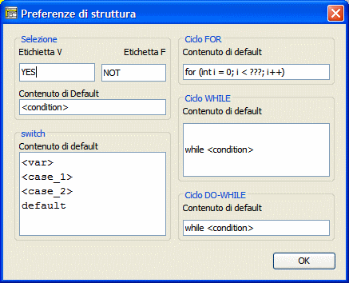
-
Parser: Permette di
definire parole (opzionali) che saranno ignorate dal Parser. Utile per
'italianizzare' le strutture ("se" invece di "if", etc...):
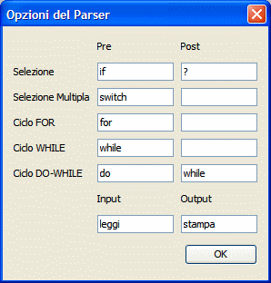
-
Analyser: Permette di selezionare quali avvisi mostrare in modalitá 'Analyze Structogram'.
-
Lingua: Per l'interfaccia utente e l'help.
-
Aspetto: Scelta tra diversi look and feel
-
Codifica Java: Utilizzata per l'Import/export del codice Java, permette la corretta gestione delle lettere accentate in varie situazioni.
-
Salva tutte le impostazioni: Rende di default le opzioni riscrivendo il file jstruct.ini
Nota: Il file di configurazione jstruct.ini é nella stessa directory
del codice, quindi JStruct é 'portabile' per progetto: per esempio può
essere usato da una penna USB.
-
Aiuto
-
User Help: Questo help viene visualizzato in un pop-up
-
About: Informazioni sul programma e crediti
Mouse
-
Click SX
-
Seleziona il blocco
-
Click SX + trascina
-
Sposta
il blocco selezionato sotto un altro blocco. Durante il trascinamento,
rosso significa destinazione non ammissibile, verde destinazione
possibile.
-
Click DX
-
Attiva un menu contestuale
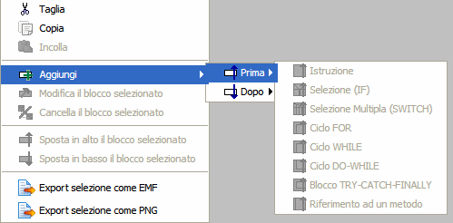
-
Doppio Click
-
-
Espande, se la Classe o il metodo sono ridotti.
-
Modifica, per tutti i blocchi e se la Classe o il metodo sono espansi.
-
Modifica dati globali, se effettuato sullo sfondo grigio.
Help |
GUI |
Blocks |
Export |
Import